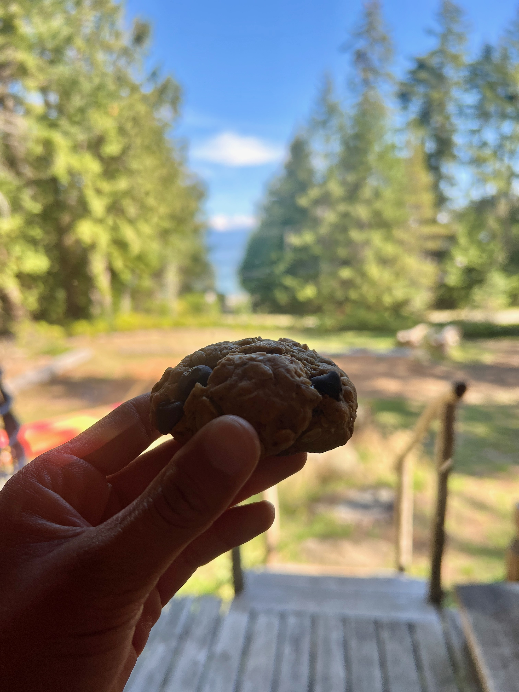

Oatmeal Peanut Butter Cookies

description
this is a delicious, vegan recipe for when you want to have a yummy and nutritious snack.
with different options for toppings, you can experiment with a combination of flavours and textures!
ingredients
- 3/4 cup melted butter
- 1/3 cup peanut butter
- 1 cup sugar
- 1 tsp baking powder
- 1/2 tsp basing soda
- 2 flaxmeal eggs (2 tbsp flaxmeal + 5 tbsp water)
- 1 tsp vanilla
- 1 1/4 cup flour
- 2 cups oatmeal
- 1 cup toppings (raisins, chocolate chips, nuts)
instructions
- preheat oven to 375 degrees
- mix melted butter with peanut butter
- add sugar, baking powder, baking soda to mixture
- add in eggs and vanilla
- add in flour and oatmeal
- add toppings
- shape cookies and place in tray with enough space for cookies to expand
- bake cookies for 15 minutes